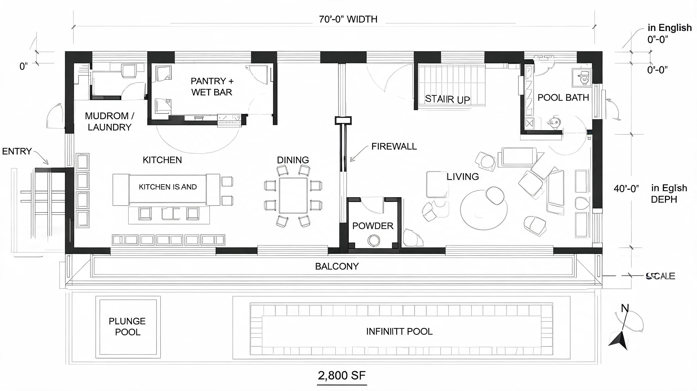

Ask architects why they stopped using Midjourney for project work and you will almost never hear "the images were not good enough." The complaint is more specific and more frustrating than that. You feed it a clean four-storey massing and it hands back a beautiful building with four-and-a-half storeys. You ask for a regular structural bay and the columns drift a foot every span. The render is gorgeous. It is also not your building. For a mood board, that does not matter. In front of a client who has seen the plans, it is the kind of mistake that costs you the room.
This is the single most repeated grievance in the architecture-AI conversation right now, and it gets misdiagnosed constantly. Architects go hunting for a better prompt, a magic parameter, a newer model version. None of that fixes it — because it is not a quality problem and it is not a prompt problem. Midjourney, and every other text-to-image model, never received your building. It received a sentence. The fix is not a better sentence. It is a different class of tool: one that takes your actual geometry as an input and is structurally not allowed to invent its way around it. This guide is the map of that category — the four geometry-aware renderers worth knowing in 2026, what each is genuinely for, and how to pick.
Why text-to-image cannot hold your geometry
It helps to be precise about the mechanism, because the precision tells you why the fix has to be a different tool rather than a better habit. A diffusion model has been trained on millions of images of buildings. What it learned is what buildings tend to look like — the statistical shape of windows, cornices, massing, light. When you prompt it, it samples a plausible image from that learned space. At no point in that pipeline is there a representation of your floor count, your bay spacing, your fenestration grid. There is nothing for the model to be faithful to, because the thing you want it to obey was never handed to it.
So the model is not disobeying you. It is doing exactly what it was built to do: producing a plausible building. "Plausible" and "yours" are different targets, and no amount of prompt engineering closes that gap, because the gap is missing information, not a misunderstanding. The tools in this guide all solve it the same way conceptually and differently in practice — they inject your geometry into the pipeline as a hard constraint: a live model, an uploaded viewport, a depth map, a line drawing. The diffusion step then decorates your building instead of dreaming a new one. The differences between the four come down to where that geometry lives and how much control you get over the constraint.
The four tools that actually hold your model
1. Veras 4 — the BIM-native default
Renders directly off your live model inside the modeller you already use. No export, no upload. The geometry lock is total because your scene is the model. The default choice for any firm whose work lives in a mainstream BIM or CAD tool.
Veras 4 runs a seventh-generation engine — Chaos moved it onto Google's Nano Banana Pro — and the practical result is cleaner output with markedly fewer of the artifacts that dogged earlier versions. But the engine is not the reason Veras sits at the top of this list for most firms. The reason is the workflow: Veras renders directly off your live model inside SketchUp, Rhino or Revit. There is no export, no screenshot, no round-trip. Your geometry is the scene. Move a wall in Revit, re-render, and the wall has moved in the image. The fidelity is not "good" — it is exact, because there is no translation step in which something could be lost.
That tight coupling is also the one real limitation. Veras assumes your model lives in one of those three host applications. If your practice models somewhere else — Archicad, Vectorworks, a pure conceptual tool — Veras is not the answer, and you should not contort your modelling workflow to fit it. For the large share of firms already inside the big three, though, Veras 4 is the shortest path from "real model" to "real render," and we have covered how it stacks up against the accessibility-first crowd in our Veras vs Rendair AI comparison.
2. ArchiVinci — geometry-aware iteration, no plugin
Reaches the geometry-aware tier from the browser instead of a plugin. Upload a viewport capture, massing screenshot or sketch and it constrains the generated image to the lines and depth it reads. Good lock, not an absolute one.
ArchiVinci sits in the same geometry-aware iteration tier as Veras but reaches it from the opposite direction. Instead of a plugin bolted onto your modeller, it is a browser tool: you upload a viewport capture, a massing screenshot or a hand sketch, and ArchiVinci constrains the generated image to the lines and depth it reads from what you gave it. The output respects your composition, your proportions and your major geometry far more reliably than a text prompt ever will.
The honest trade is fidelity. An uploaded screenshot carries less geometric information than a live model — there is no depth buffer, no object data, just pixels — so the lock is good rather than absolute. Push ArchiVinci hard on a complex facade and it will occasionally simplify a detail it could not read cleanly. For early-stage iteration, for firms whose models do not live in SketchUp, Rhino or Revit, and for anyone who wants a fast loop without installing anything, that trade is well worth making. Our fuller ArchiVinci review walks through where the upload workflow holds and where it slips.
3. D5 Render — a real renderer with an AI layer on top
Different in kind. D5 is a real-time GPU rendering engine first; the AI features sit on top. Geometry is locked because D5 is genuinely rendering your imported model — not constraining a diffusion guess. Full camera and scene control.
D5 Render belongs in this guide but it is different in kind from the other three. D5 is a real-time rendering engine first — a GPU renderer in the lineage of Enscape and Lumion — and its AI features are layered on top of that foundation. Geometry is not "locked" here by a clever constraint on a diffusion model. It is locked because D5 is genuinely rendering your imported model the way renderers always have. There is no probability distribution to police; the building in the frame is the building you imported.
What the AI layer does is take over the parts where invention is welcome: styling, material suggestion, entourage, sky and post. The building stays exactly as designed while the machine helps with everything around it. The cost is that D5 expects you to do real scene work — import, camera, lighting, materials — rather than typing a sentence and waiting. For firms that want full control of the shot and are comfortable with a renderer's workflow, that is a feature, not a tax. We go deeper on the AI side specifically in our D5 Render AI features review.
4. ComfyUI + ControlNet — maximum control, steepest climb
A node-graph interface for running diffusion models locally. Feed a depth pass or line render of your model in as a ControlNet input and the diffusion model is pinned to your edges. The most precise lock available — and the most demanding to learn.
ComfyUI is a node-graph interface for running diffusion models locally, and the piece that matters for this guide is ControlNet. You take a view of your model — a depth pass, a line render, a Canny edge map exported straight from your viewport — and feed it into the graph as a ControlNet input. The diffusion model is then pinned to those edges. It can change material, light, weather, season and time of day freely; it cannot move the line. This is the most precise geometry lock available anywhere and, because you can stack and weight multiple control inputs, also the most flexible.
It is also the one that will cost you a weekend to learn and a technically minded person to keep running. Node graphs reward people who think in pipelines and punish everyone else; the depth-and-line export step has to be set up correctly or the lock is loose. For a firm with a visualization specialist or a computational-design lead, ComfyUI delivers a controllable, license-free pipeline that no commercial tool can match on precision. For a firm without that person, it is the wrong tool no matter how good the results look in a demo. Our ComfyUI + Rhino workflow guide is the place to start if you want to attempt it.
The four, side by side
| Tool | How it locks geometry | Where it runs | Learning curve | Best for |
|---|---|---|---|---|
| Veras 4 | Renders off your live model — no translation | Plugin in SketchUp / Rhino / Revit | Low | BIM-first firms |
| ArchiVinci | Constrains to an uploaded viewport or sketch | Browser — nothing to install | Low | Studios outside the big three modellers |
| D5 Render | Genuinely renders the imported model | Windows desktop app | Medium | Full scene, camera & lighting control |
| ComfyUI + ControlNet | Depth / line input pins every edge | Local node graph — needs a GPU | High | Teams with a visualization specialist |
How to choose — it is a question about your file
The mistake is shopping for "the best geometry-aware renderer." There is no such thing, because the four do not really compete — each owns a different answer to one question: where does your model already live? Answer that honestly and the choice mostly makes itself.
- Your model lives in SketchUp, Rhino or Revit. Use Veras 4. It reads the file you already work in, the lock is exact, and the learning curve is an afternoon. Stop here.
- Your model lives somewhere else, or you want zero installation. Use ArchiVinci. The browser upload workflow gets you a good geometry lock without bending your modelling pipeline around a plugin.
- You want a real renderer's control over camera, light and scene. Use D5 Render. You will do more scene-building work, and in exchange you get a shot you fully directed rather than one you described.
- You have a tech artist and want a license-free, maximally precise pipeline. Use ComfyUI with ControlNet. Nothing else matches it on control — provided someone on the team genuinely wants to own it.
What none of them fix
Geometry-aware is not judgement-aware. Every tool here will still need a real prompt — or a real renderer's hand — for material, light, atmosphere and mood. They hold the building; they do not supply the taste. They are also, all four, slower to a first image than typing a Midjourney prompt. You are trading setup time for trust, and that is almost always the right trade for project work — but it is a trade, and it is worth saying out loud.
A geometry lock is a guarantee of fidelity, not of quality. Lock a sloppy massing and you get a faithful render of a sloppy massing.
And none of them will rescue a weak model. The geometry lock faithfully reproduces whatever you give it — including its mistakes. These tools end the era of the AI inventing a building you did not design. They do not begin an era of the AI designing it well. That part is still yours.
We test the rendering stack on real project work.
No sponsored placements, no affiliate links — just field notes from a working studio. The ArchiGen AI journal ships tool reviews and workflow breakdowns weekly.
Read the journal →Our take
Midjourney V8 made the concept phase faster and sharper this spring, and it remains the right tool while the building is still an idea — competition imagery, mood, atmosphere. But the V8 release did nothing for geometry, because resolution and speed were never the problem. The moment your building stops being an idea and becomes a model, you change tiers. The geometry-aware tier is where project rendering actually happens in 2026, and the firms that get burned in front of clients are the ones still trying to make the concept-phase tool do project-phase work.
Do not overthink the choice within the tier. If you are a BIM-first firm, Veras 4 reads the file you already work in and you are done. If you want a real renderer's control of the shot, D5. If you have a visualization specialist who wants a license-free, maximally controllable pipeline, ComfyUI with ControlNet. If you want none of that complexity and just want a browser tab, ArchiVinci. The four differ in workflow, cost and ceiling — but they agree on the one principle that matters. Once the geometry is real, never hand it to a model that cannot see it.
Field guide by ArchiGen AI. Tool capabilities and pricing current as of May 2026 and approximate. No affiliate relationship with any tool named.